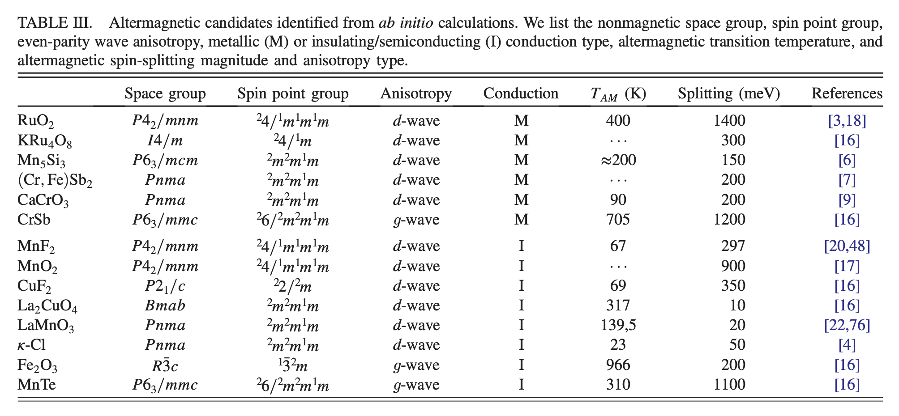
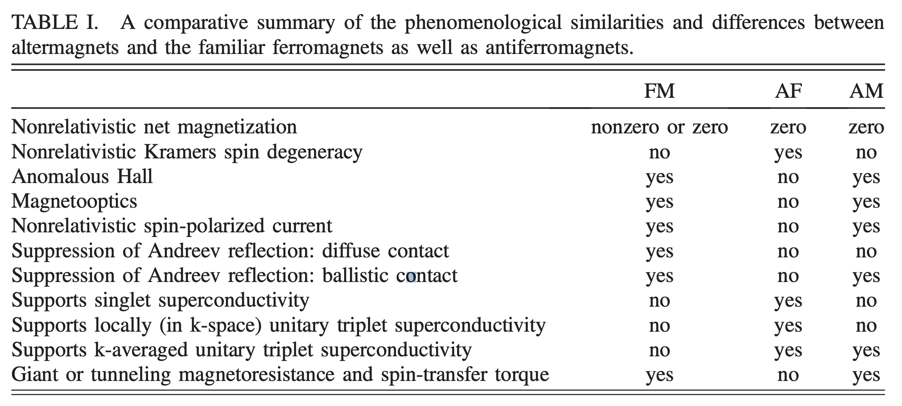
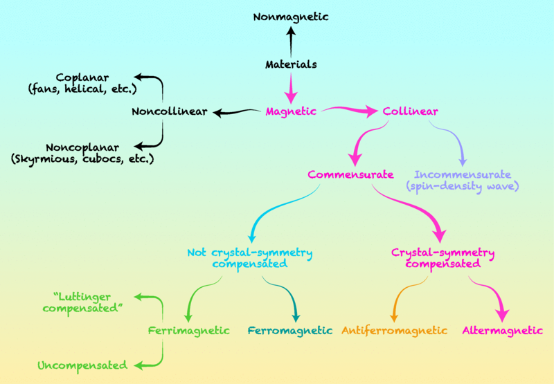
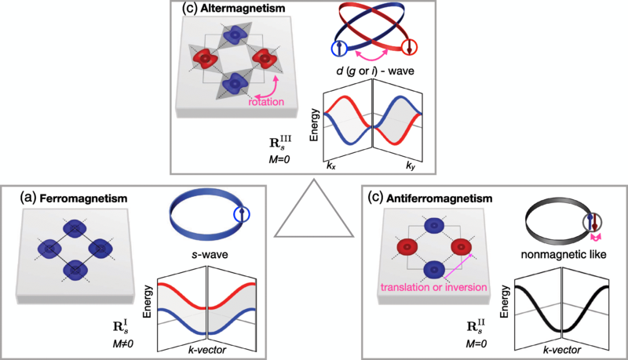

62: Altermagnet
Starring


Show notes
目次
交代磁性の盛り上がりに便乗して、spin groupが何かを解説するのって需要ありますか？それともこっちはもう皆さん十分に詳しいのでしょうか？
お世話になってる先生がこの論文の著者と仲良くて、なんかやる？という話をこの間したんですよねhttps://t.co/anHkEz2Chl— Suguru Yoshida (@Suguru_SgY) February 18, 2024
01:09 そもそも交代磁性って？
- 交代磁性のはっきりした定義はないが「時間反転対称性が破れた反強磁性体」はおそらく必要条件
- Libor Šmejkal らによる提唱
- I.Mazinの解説

↑交代磁性の物質候補 (Libor Šmejkal et al., Phys. Rev. X 12, 040501 (2022) より CC BY 4.0 で引用)

↑物性ごとの強磁性、反強磁性、交代磁性の違い (Igor Mazin and The PRX Editors, Phys. Rev. X 12, 040002 より CC BY 4.0 で引用)

↑磁性の区分 (Igor Mazin and The PRX Editors, Phys. Rev. X 12, 040002 より CC BY 4.0 で引用)

↑共線的強磁性、反強磁性、交代磁性の比較 (Libor Šmejkal et al., Phys. Rev. X 12, 040501 (2022) より CC BY 4.0 で引用)
- 最初に交代磁性と日本語訳したのは誰？
- colinear: 共線的な
- 時間反転操作と反強磁性体のショート動画を作成しました！
19:33 なんで定義がばらつくの
- 有機物の反強磁性体理論論文: Spin current generation in organic antiferromagnets - Nature Communications

- マンガン3スズ
- Large anomalous Hall effect in a non-collinear antiferromagnet at room temperature - Nature (Summary: Large anomalous Hall effect in a non-collinear antiferromagnet at room temperature - Nature)
- Phys. Rev. Lett. 130, 126302 (2023) - Ultrafast Dynamics of Intrinsic Anomalous Hall Effect in the Topological Antiferromagnet ${\mathrm{Mn}}_{3}\mathrm{Sn}$ (arXiv: 2206.06627)
41:23 交代磁性の代表的物質
- RuO2
- クロムアンチモン
- マンガンテルル
- Phys. Rev. B 107, L100418 (2023) - Altermagnetism in MnTe: Origin, predicted manifestations, and routes to detwinning (arXiv: 2301.08573)
- Phys. Rev. Lett. 132, 036702 (2024) - Broken Kramers Degeneracy in Altermagnetic MnTe (arXiv: 2308.11180)
- Altermagnetic lifting of Kramers spin degeneracy - Nature
53:51 おたより
- 固体量子(研究室公認VTuber)（@QM_phys_kyoto）さん / X
- こたいりょうこさんからのおたより
たくさんの質問すみません💦答えられるものだけで大丈夫です
Q1. altermagnet、日本語では交代磁性？交替磁性？ Q2. altermagnetの定義を教えてください Q3. 磁気トロイダル四極子秩序がaltermagnetだと見ましたが、altermagnetは全て磁気トロイダル四極子秩序ですか？(altermagnet = 磁気トロイダル四極子秩序ですか？) Q4. altermagnetの特徴として非対称なバンド分裂と大きな異常ホール伝導度があると思いますが、他に特徴はありますか？ Q5. altermagnetじゃない物質で上記の特徴(非対称なバンド分裂と大きな異常ホール伝導度)を持っている物質もあると思いますが、それらを区別する利点を教えてください
ラジオ楽しみにしてます！
- スピン点群の提唱者とのエピソードは前回のよしださん回の最後を参照 → Interaxion 60: Welcome to the physics world
- Phys. Rev. Lett. 132, 176701 (2024) - X-Ray Magnetic Circular Dichroism in Altermagnetic $\ensuremath{\alpha}$-MnTe arXiv: 2305.03588
- 結晶ホール効果
- Šmejkal et al. Crystal time-reversal symmetry breaking and spontaneous Hall effect in collinear antiferromagnets - Science Advances
- Xユーザーの部品（川口春奈）さん: 「Crystal time-reversal symmetry breaking and spontaneous Hall effect in collinear antiferromagnets https://t.co/6wqfPv7Spc 「非中心対称な位置にある非磁性原子と結合した共線的反強磁性から生じる、これまで見落とされていた堅牢なホール効果機構を特定」 結晶ホール効果なるほど」 / X
Crystal time-reversal symmetry breaking and spontaneous Hall effect in collinear antiferromagnetshttps://t.co/6wqfPv7Spc
「非中心対称な位置にある非磁性原子と結合した共線的反強磁性から生じる、これまで見落とされていた堅牢なホール効果機構を特定」
結晶ホール効果なるほど— 部品（川口春奈） (@tjmlab) April 27, 2024
- 匿名さんからのおたより
創発インダクター、交代磁性の次はどのコンテンツを追いかけるとよさそうですか？
- ハイエントロピー合金とは？
- 量子幾何
- arXiv: 1012.1337 Quantum Geometric Tensor (Fubini-Study Metric) in Simple Quantum System: A pedagogical Introduction
- Riemannian geometry of resonant optical responses - Nature Physics
- The quantum geometric origin of capacitance in insulators - Nature Communications
- Non-trivial quantum geometry and the strength of electron–phonon coupling - Nature Physics
- Concept of Quantum Geometry in Optoelectronic Processes in Solids: Application to Solar Cells - Nagaosa - 2017 - Advanced Materials - Wiley Online Library
- Quantum Berry Phase of Electrons in Condensed Matter
- 量子計量
- ペロブスカイト型バナジウム酸化物の磁気・軌道秩序に対するランダムネス効果
- 査読のおわりさんからのおたより
研究を始めたばかりの大学院生です。いつも柿田さんのツイートを楽しく拝見させていただいております。今度PNASに論文を出すことにしたのですが、柿田さんが通されたあの素晴らしい論文の経緯について、査読がどうだったとか、裏話などあれば教訓にしたいです。よろしくお願いします。
- Emergent electromagnetic induction beyond room temperature - PNAS
- 査読コメント も要チェックなよしださんの最新作！ → High-entropy engineering of the crystal and electronic structures in a Dirac material - Nature Communications
- ちはやぶる雑コラ職人からのおたより
柿田さんのポストからは隠せぬハイソサエティ感を感じるのですが、そうした文化資本は生まれから来るものでしょうか？それとも育ちでしょうか？それぞれ過去エピソードとともに語っていただければ幸いです。
- 柿田さんのハイソサイエティ感を感じられるじゆうちょう Advent Calendar 2020の記事 → 本は集める｜柿田 昭一郎
- 文化資本 - Wikipedia
- さんてぃさんからのおたより
交代磁性体って何が嬉しいんですか？(何が面白くて研究されているんですか？)
- 匿名さんからのおたより
結晶ホール効果は交代磁性体で発現し得ますか？
- 匿名さんからのおたより
交代磁性の見つけ方、というか設計の仕方をつまびらかに教えてください 私も真似したいです
- Journal of Magnetism and Magnetic Materials - ScienceDirect.com by Elsevier
- Bilbao Crystallographic Server
- 匿名さんからのおたより
交代磁性と量子幾何って関係ありますか？
- 匿名さんからのおたより
交代磁性が提唱される前から似たような話は合ったような気がするんですが、みんな忘れている知られざる先行研究があれば教えてください
- 匿名さんからのおたより
交代磁性って結局ホニャララの焼き直しでしょ？っていう意見を聞きますが、そういう人を論破するためになにが本質的に新しいのかスバっとお願いします。ひろゆきっぽく
- 次のコンテンツ柿田編
- 磁気スキルミオン - Wikipedia
- 磁気バブル - Wikipedia
- NV中心の物理と応用への魅力
- 準結晶 - Wikipedia
- 強磁性準結晶の発見～準周期性が示す特異な磁性の解明に向けて飛躍的な前進～｜東京理科大学
お知らせ
- 出演して頂ける方や感想などをお待ちしております！ #interaxion
おたよりコーナーを作りました。質問、感想、要望などお待ちしております。https://t.co/rz0mlRKZU3
— Interaxion Podcast (@interaxion) January 12, 2021